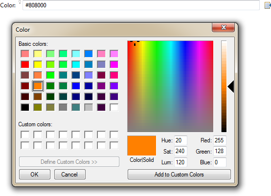

In past releases, Sapphire used a Java annotation processor linked to @GenerateImpl annotation to produce implementation classes for model element interfaces at build time. This system has been replaced by on-demand compilation straight to Java bytecode. When application code instantiates an element for the first time, Sapphire will automatically compile it and use the compiled result for the duration of the JVM instance.
The on-demand approach makes it easier to get started with Sapphire as it does not require build customization to compile implementation classes.
ValueSerializationService, AdapterService and EL's TypeCast API have been consolidated with ConversionService. The result is a single API for implementing conversions. Many of the basic conversions are now available in the root service context, opening the door for novel uses.
Example
Integer number = Sapphire.service( MasterConversionService.class ).convert( "123", Integer.class );Example
In this example, the generics are used in conjunction with Sapphire's library of conversions to implement the pattern where the type of the default value controls the return type. This pattern is typically implemented as a less flexible series of overloaded methods for various types.
public class AttributesContainer
{
private final Map<String,String> attributes = new HashMap<String,String>();
public <T> T getAttribute( final String name, final T def )
{
if( name == null )
{
throw new IllegalArgumentException();
}
Object value = this.attributes.get( name );
if( value != null && def != null && def != String.class )
{
value = Sapphire.service( MasterConversionService.class ).convert( value, def.getClass() );
}
if( value == null )
{
value = def;
}
return (T) value;
}
public String getAttribute( final String name )
{
return (String) getAttribute( name, null );
}
public void setAttribute( final String name, final Object value )
{
if( name == null )
{
throw new IllegalArgumentException();
}
if( value == null )
{
this.attributes.remove( name );
}
else
{
final String string = Sapphire.service( MasterConversionService.class ).convert( value, String.class );
this.attributes.put( name, string );
}
}
}Editor pages are able to persist user interface state between sessions independent of the data that is being edited. What state is persisted is dependent on editor page type. Two common examples of persistent state are sizing of resizable elements and selection. The persistent state is now extensible, allowing adopters to persist custom data.
The recommended approach is to extend the page's persistent state element type to add custom properties. The custom element type for persistent state is specified in sdef.
Example
In the catalog sample, a toggle action controls whether the manufacturer name is shown in the catalog item label. The state of this toggle is persisted by extending the state of the editor page. The persistent state is also used for communication between the toggle and the item label.
public interface CatalogEditorPageState extends MasterDetailsEditorPageState
{
ModelElementType TYPE = new ModelElementType( CatalogEditorPageState.class );
// *** ShowManufacturer ***
@Type( base = Boolean.class )
@DefaultValue( text = "false" )
ValueProperty PROP_SHOW_MANUFACTURER = new ValueProperty( TYPE, "ShowManufacturer" );
Value<Boolean> getShowManufacturer();
void setShowManufacturer( String value );
void setShowManufacturer( Boolean value );
}The custom state element type is attached to the editor page in sdef.
<editor-page>
<persistent-state-element-type>org.eclipse.sapphire.samples.catalog.CatalogEditorPageState</persistent-state-element-type>
</editor-page>The toggle action handler only interacts with the editor page state.
public final class ShowManufacturerActionHandler extends SapphireActionHandler
{
private CatalogEditorPageState state;
@Override
public void init( final SapphireAction action, final ActionHandlerDef def )
{
super.init( action, def );
this.state = (CatalogEditorPageState) getPart().nearest( SapphireEditorPagePart.class ).state();
final Listener listener = new FilteredListener<PropertyContentEvent>()
{
@Override
protected void handleTypedEvent( final PropertyContentEvent event )
{
setChecked( ShowManufacturerActionHandler.this.state.getShowManufacturer().getContent() );
}
};
this.state.attach( listener, CatalogEditorPageState.PROP_SHOW_MANUFACTURER );
setChecked( this.state.getShowManufacturer().getContent() );
attach
(
new FilteredListener<DisposeEvent>()
{
@Override
protected void handleTypedEvent( final DisposeEvent event )
{
ShowManufacturerActionHandler.this.state.detach( listener, CatalogEditorPageState.PROP_SHOW_MANUFACTURER );
}
}
);
}
@Override
protected Object run( final SapphireRenderingContext context )
{
this.state.setShowManufacturer( ! this.state.getShowManufacturer().getContent() );
return null;
}
}The toggle action and its handler are defined in sdef.
<editor-page>
<action>
<id>Sample.ShowManufacturer</id>
<label>Show Manufacturer</label>
<image>ShowManufacturer.png</image>
<type>TOGGLE</type>
<context>Sapphire.EditorPage</context>
<location>before:Sapphire.Outline.Hide</location>
</action>
<action-handler>
<action>Sample.ShowManufacturer</action>
<id>Sample.ShowManufacturer</id>
<impl>ShowManufacturerActionHandler</impl>
</action-handler>
</editor-page>Finally, the content outline node label for a catalog item is defined using an expression that reads the editor page state to determine whether to include the manufacturer in the label. The label automatically updates when any of the properties utilized in the expression are changed.
<node-factory>
<property>Items</property>
<case>
<label>${ Name == null ? "<item>" : ( State().ShowManufacturer && Manufacturer != null ? Concat( Manufacturer, " ", Name ) : Name ) }</label>
</case>
</node-factory>Alternatively, custom state can be stored as arbitrary key-value pairs without extending the persistent state element. All of the system-provided state element types include an Attributes property for this purpose. To make it easier to work with the Attributes property, methods are provided to read and write attributes by name. These methods leverage all conversions known to Sapphire, so it is typically not necessary to manually convert the values to and from a string.
This approach should only be used in situations when extending the persistent state element is not practical or possible. State stored as attributes is harder to access. For instance, unlike actual properties, attributes cannot be directly accessed from EL.
Example
In the catalog sample, a toggle action controls whether the catalog items are color-coded by manufacturer. The state of this toggle is persisted as an attribute.
public final class ShowManufacturerColorActionHandler extends SapphireActionHandler
{
public static final String ATTRIBUTE = "ColorCode";
private CatalogEditorPageState state;
@Override
public void init( final SapphireAction action, final ActionHandlerDef def )
{
super.init( action, def );
this.state = (CatalogEditorPageState) getPart().nearest( SapphireEditorPagePart.class ).state();
final Listener listener = new FilteredListener<PropertyContentEvent>()
{
@Override
protected void handleTypedEvent( final PropertyContentEvent event )
{
setChecked( ShowManufacturerColorActionHandler.this.state.getAttribute( ATTRIBUTE, false ) );
}
};
this.state.attach( listener, CatalogEditorPageState.PROP_ATTRIBUTES.getName() + "/*" );
setChecked( this.state.getAttribute( ATTRIBUTE, false ) );
attach
(
new FilteredListener<DisposeEvent>()
{
@Override
protected void handleTypedEvent( final DisposeEvent event )
{
ShowManufacturerColorActionHandler.this.state.detach( listener, CatalogEditorPageState.PROP_ATTRIBUTES.getName() + "/*" );
}
}
);
}
@Override
protected Object run( final SapphireRenderingContext context )
{
this.state.setAttribute( ATTRIBUTE, ! this.state.getAttribute( ATTRIBUTE, false ) );
return null;
}
}The toggle action and its handler are defined in sdef.
<editor-page>
<action>
<id>Sample.ShowManufacturerColor</id>
<label>Color Code Manufacturers</label>
<image>ItemPurple.png</image>
<type>TOGGLE</type>
<context>Sapphire.EditorPage</context>
<location>after:Sample.ShowManufacturer</location>
<location>before:Sapphire.Outline.Hide</location>
</action>
<action-handler>
<action>Sample.ShowManufacturerColor</action>
<id>Sample.ShowManufacturerColor</id>
<impl>ShowManufacturerColorActionHandler</impl>
</action-handler>
</editor-page>A custom EL function is used to read the state attribute and to derive a color code item image based on the manufacturer.
public final class ItemImageFunction extends Function
{
private final ImageData IMAGE_GENERIC = ImageData.createFromClassLoader( ItemImageFunction.class, "Item.png" );
private final ImageData[] IMAGES =
{
ImageData.createFromClassLoader( ItemImageFunction.class, "ItemBlue.png" ),
ImageData.createFromClassLoader( ItemImageFunction.class, "ItemGreen.png" ),
ImageData.createFromClassLoader( ItemImageFunction.class, "ItemOrange.png" ),
ImageData.createFromClassLoader( ItemImageFunction.class, "ItemPurple.png" ),
ImageData.createFromClassLoader( ItemImageFunction.class, "ItemRed.png" ),
ImageData.createFromClassLoader( ItemImageFunction.class, "ItemTurquoise.png" ),
ImageData.createFromClassLoader( ItemImageFunction.class, "ItemYellow.png" )
};
@Override
public String name()
{
return "CatalogItemImage";
}
@Override
public FunctionResult evaluate( final FunctionContext context )
{
if( context instanceof PartFunctionContext )
{
final SapphirePart part = ( (PartFunctionContext) context ).part();
final MasterDetailsEditorPagePart page = part.nearest( MasterDetailsEditorPagePart.class );
if( page != null )
{
final IModelElement element = part.getLocalModelElement();
if( element instanceof Item )
{
final Item item = (Item) element;
final MasterDetailsEditorPageState state = page.state();
return new FunctionResult( this, context )
{
private Listener listener;
@Override
protected void init()
{
this.listener = new FilteredListener<PropertyContentEvent>()
{
@Override
protected void handleTypedEvent( final PropertyContentEvent event )
{
refresh();
}
};
state.attach( this.listener, MasterDetailsEditorPageState.PROP_ATTRIBUTES.getName() + "/*" );
element.attach( this.listener, Item.PROP_MANUFACTURER );
}
@Override
protected Object evaluate()
{
final boolean color = state.getAttribute( ShowManufacturerColorActionHandler.ATTRIBUTE, false );
if( color )
{
final String manufacturer = item.getManufacturer().getContent();
final int hashCode = ( manufacturer == null ? 0 : manufacturer.hashCode() );
final int index = abs( hashCode ) % IMAGES.length;
return IMAGES[ index ];
}
else
{
return IMAGE_GENERIC;
}
}
@Override
public void dispose()
{
super.dispose();
if( this.listener != null )
{
state.detach( this.listener, MasterDetailsEditorPageState.PROP_ATTRIBUTES.getName() + "/*" );
element.detach( this.listener, Item.PROP_MANUFACTURER );
this.listener = null;
}
}
};
}
}
}
throw new FunctionException( "CatalogItemImage() function cannot be used in this context.");
}
}The CatalogItemImage() function is registered as a Sapphire extension.
<extension>
<function>
<name>CatalogItemImage</name>
<impl>org.eclipse.sapphire.samples.catalog.ItemImageFunction</impl>
</function>
</extension>Finally, the content outline node image for a catalog item is defined using a simple expression that references the CatalogItemImage() function.
<node-factory>
<property>Items</property>
<case>
<image>${ CatalogItemImage() }</image>
</case>
</node-factory>A facility to copy all properties of one element to another element existed in previous releases. Now a facility to copy individual properties is also available.
IModelElement
{
void copy( IModelElement element )
void copy( IModelElement element, ModelProperty property )
void copy( IModelElement element, String property )
}Clear one property or all of them using the new methods.
IModelElement
{
void clear()
void clear( ModelProperty property )
void clear( String property )
}Among objects returned by property getters (Value, Transient, ModelElementHandle and ModelElementList), ModelElementHandle was the only one that had no API to retrieve the parent property.
ModelElementHandle
{
ElementProperty property()
}For convenience, type can be specified using the type's class to avoid having to cast the result.
ModelElementHandle
{
T element()
T element( boolean createIfNecessary )
T element( boolean createIfNecessary, ModelElementType type )
<C extends IModelElement> C element( boolean createIfNecessary, Class<C> cl )
}RequiredConstraintService determines whether a value or an element property is required to have content. Most frequently specified via an @Required annotation, which now supports EL for specifying custom semantics.
Example
public class CustomRequiredConstraintService extends RequiredConstraintService
{
@Override
protected void initRequiredConstraintService()
{
// Optionally register listeners to invoke refresh method when the required constraint
// may need to be updated.
}
@Override
protected Boolean compute()
{
...
}
@Override
public void dispose()
{
super.dispose();
// Remove any listeners that were added during initialization.
}
}@Service( impl = CustomRequiredConstraintService.class )
ValueProperty PROP_CATEGORY = new ValueProperty( TYPE, "Category" );
Value<String> getCategory();
void setCategory( String value );Certain types of services, such as many ConversionService implementations, are useful across different service contexts. Services that are part of the new root service context are visible to all other contexts.
Sapphire
{
static <S extends Service> S service( Class<S> type )
static <S extends Service> List<S> services( Class<S> type )
static synchronized ServiceContext services()
}Integer number = Sapphire.service( MasterConversionService.class ).convert( "123", Integer.class );<extension xmlns="http://www.eclipse.org/sapphire/xmlns/extension">
<service>
<id>Sapphire.ConversionService.StringToInteger</id>
<description>ConversionService implementation for String to Integer conversions.</description>
<implementation>org.eclipse.sapphire.internal.StringToIntegerConversionService</implementation>
<context>Sapphire</context>
</service>
</extension>Registering services through Sapphire extension system has been made even easier by removing the need to implement a ServiceFactory for services that do not require custom applicability logic. The service implementation class can be specified directly.
<extension xmlns="http://www.eclipse.org/sapphire/xmlns/extension">
<service>
<id>Sapphire.ConversionService.StringToInteger</id>
<description>ConversionService implementation for String to Integer conversions.</description>
<implementation>org.eclipse.sapphire.internal.StringToIntegerConversionService</implementation>
<context>Sapphire</context>
</service>
</extension>The set of available conversions has been expanded. The new conversions can be used in a variety of contexts that draw upon ConversionService implementations, such as when using MasterConversionService or ModelElement.adapt() API.
| Source | Target |
|---|---|
| org.eclipse.sapphire.modeling.ModelElement | org.w3c.dom.Document |
| org.eclipse.sapphire.modeling.ModelElement | org.w3c.dom.Element |
| org.eclipse.sapphire.modeling.ModelElement | org.eclipse.sapphire.modeling.xml.XmlElement |
| org.eclipse.sapphire.modeling.xml.XmlResource | org.w3c.dom.Document |
| org.eclipse.sapphire.modeling.xml.XmlResource | org.w3c.dom.Element |
| org.eclipse.sapphire.modeling.xml.XmlResource | org.eclipse.sapphire.modeling.xml.XmlElement |
| java.lang.String | org.eclipse.sapphire.java.JavaIdentifier |
Use EL to specify validation rules.
Example
@Type( base = BigDecimal.class )
@Validation
(
rule = "${ Scale( Discount, 2 ) <= Scale( Subtotal, 2 ) + Scale( Delivery, 2 ) }",
message = "Discount must not exceed subtotal plus delivery charge."
)
ValueProperty PROP_DISCOUNT = new ValueProperty( TYPE, "Discount" );
Value<BigDecimal> getDiscount();
void setDiscount( String value );
void setDiscount( BigDecimal value );Use EL in the @Required annotation to define custom semantics.
Example
In this example, the Category property is required only if the Version property is in the given range.
@Required( "${ VersionMatches( Version, '[1.0-2.1)' ) }" )
ValueProperty PROP_CATEGORY = new ValueProperty( TYPE, "Category" );
Value<String> getCategory();
void setCategory( String value );In the context of a property editor, specifying property name when using Enabled() function can be redundant, so a zero argument version of the function is now available, but only for the property editor context.
Example
<property-editor>
<property>FormLoginPage</property>
<visible-when>${ Enabled() }</visible-when>
</property-editor>Sapphire EL functions are registered by name and the same function can take an arbitrary number of operands. In certain cases, it is useful to direct different operand counts to different implementations. To that end, it is now possible to constraint which operand counts a particular function definition applies to. Absent the constraint, a function definition still applies to all operand counts.
Example
<extension xmlns="http://www.eclipse.org/sapphire/xmlns/extension">
<function>
<name>Enabled</name>
<operand-count>1</operand-count>
<operand-count>2</operand-count>
<impl>org.eclipse.sapphire.modeling.el.EnabledFunction</impl>
</function>
</extension><extension xmlns="http://www.eclipse.org/sapphire/xmlns/extension">
<function>
<name>Enabled</name>
<operand-count>0</operand-count>
<impl>org.eclipse.sapphire.ui.internal.PropertyEditorEnabledFunction</impl>
</function>
</extension>Returns the root element of editor page's persistent state, allowing access to various state properties. This is particularly useful when the persistent state is extended with custom properties wired to custom actions, as it allows any EL-enabled facility to integrate with the custom state property.
Example
In this example, a custom state property is used to control whether content outline node label for an item in the catalog sample should include the manufacturer.
<node-factory>
<property>Items</property>
<case>
<label>${ Name == null ? "<item>" : ( State().ShowManufacturer && Manufacturer != null ? Concat( Manufacturer, " ", Name ) : Name ) }</label>
</case>
</node-factory>Re-use section definitions across multiple node definitions in a master-details editor page.
Example
<definition>
<section>
<id>CommonSection</id>
<label>common</label>
<content>
...
</content>
</section>
<node>
<id>Node-1</id>
<label>node 1</label>
<section-ref>CommonSection</section-ref>
<section>
<label>another section</label>
<content>
...
</content>
</section>
</node>
<node>
<id>Node-2</id>
<label>node 2</label>
<section-ref>CommonSection</section-ref>
<section>
<label>another section</label>
<content>
...
</content>
</section>
</node>
</definition>Define a color value property using the provided Color type and Sapphire will supply browse support.
Example
@Type( base = Color.class )
ValueProperty PROP_COLOR = new ValueProperty( TYPE, "Color" );
Value<Color> getColor();
void setColor( String value );
void setColor( Color value );

The JavaIdentifier class can be used to represent a legal Java identifier, such as the name of a variable,
a field or a method. Identifiers must conform to
Verification happens in the constructor, so any instance can be assumed to represent a valid identifier. This class can be used by itself or as a type of a value property.
Example
@Type( base = JavaIdentifier.class )
ValueProperty PROP_FIELD_NAME = new ValueProperty( TYPE, "FieldName" );
Value<JavaIdentifier> getFieldName();
void setFieldName( String value );
void setFieldName( JavaIdentifier value );